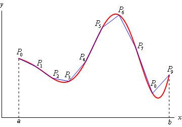

using MTH229
using Plots
plotly()Plots.PlotlyBackend()
A notebook for this material: ipynb
Let \(f(x)\) be some non-negative, continuous function over the interval \([a,b]\). The area under the graph of \(f(x)\) is given by the definite integral:
\[ \text{Area under f} = \int_a^b f(x) dx \]
Computing this area is often made easier with the Fundamental Theorem of Calculus which states in one form that one can compute a definite integral through knowledge of an antiderivative. In particular, if \(F(x)\) is an antiderivative for \(f(x)\), a continuous function, then
\[ \int_a^b f(x) dx = F(b) - F(a). \]
This is great as long as some antiderivative is known. There are several different techniques for finding antiderivatives. The integrate function in the SymPy package can do many of them:
using MTH229
using Plots
plotly()Plots.PlotlyBackend()f(x) = x^3 - cos(x) + x*log(x)
@syms x
integrate(f(x), x)To find the definite integral, say from \(1\) to \(10\) we have:
integrate(f(x), (x, 1, 10))If all functions had antiderivatives that could be found symbolically, there wouldn’t be much more to say. However, it is a fact of life that not all nice functions will have an antiderivative in a convenient form. A test for such functions is provided in Risch’s algorithm. In cases where no workable antiderivative is available, the above approach is of no help. Rather, to find the area one can turn to numeric approximations that progressively get better as more approximations are taken.
One such approximation is given by the familiar Riemann sums, which we will look at here. However, the problem of trying to find the area of geometric figures did not start with Riemann some 150 years ago, indeed it has a much longer history. In the time of Pythagorus the idea of calculating area was one of being able to construct a square of equal area to a figure. This was known as quadrature. Finding such answers for figures bounded by curves was difficult, though Archimedes effectively computed the area under \(f(x) = x^2\) about 2,000 years before Riemann sums using triangles, not rectangles to approximate the area. By medieval Europe, the term quadrature evolved to be the computation of an area by any means. For example, Galileo and Roberval found the area bounded by a cycloid arch. Along the way, other approximations were used. We will see those due to Simpson and Gauss, both predating Riemann.
In 1854 Riemann was the first to give a rigorous definition of the integral of a continuous function on a closed interval, the problem we wish to solve here, using the concept of a Riemann sum. A Riemann sum is one of the simplest to understand approximations to the area under a curve. The basic idea is that the interval \([a,b]\) is partitioned through points \(a = x_0 < x_1 < \cdots x_n = b\) and the area under \(f(x)\) between \(x_i\) and \(x_{i+1}\) is approximated by a rectangle with the base \(x_{i+1} - x_i\) and height given by \(f(x_i^*)\), where \(x_i^*\) is some point in the interval \([x_i, x_{i+1}]\). Typical choices are the left point or the right point of the interval, or the \(x\) value which minizes or maximizes \(f\) over the interval. The figure shows these four choices for some sample function. For a Riemann integrable function, such as a continuous function on \([a,b]\), any of the choices will yield the same value as the partition’s mesh shrinks to \(0\).
As with other limits, we can numerically approximate the limit by computing the Riemann sum for some partition. The steps for this include:
If we partition \([a,b]\) into \(n\) same sized intervals, then each has length \(\delta = (b-a)/n\) and so the points are separated by this amount. As such, we can choose our \(a = x_0 < x_1 < \dots < x_n = b\) with commands like:
a, b, n = 1, 3, 5;
delta = (b-a)/n;
xs = a .+ (0:n) * delta1.0:0.4:3.0To apply a function to a range of values, we may use a map, a comprehension, a for loop or the “dot” notation. We will use broadcasting here. Recall, the syntax:
f(x) = x^2
fxs = f.(xs)6-element Vector{Float64}:
1.0
1.9599999999999997
3.24
4.840000000000001
6.760000000000001
9.0Now to add the numbers up. For this task, the sum function is available
sum(fxs)26.8Okay, just one subtlety, we really only want the points
[ a .+ (0:n-1) * delta ]1-element Vector{StepRangeLen{Float64, Base.TwicePrecision{Float64}, Base.TwicePrecision{Float64}, Int64}}:
1.0:0.4:2.6for the left Riemann sum and the points
[ a .+ (1:n) * delta ]1-element Vector{StepRangeLen{Float64, Base.TwicePrecision{Float64}, Base.TwicePrecision{Float64}, Int64}}:
1.4:0.4:3.0for the right.
Putting this together, here are commands to approximate the area under the curve \(f(x)=x^2\) using 10 left Riemann sums:
f(x) = x^2
a, b, n = 1, 3, 10; ## note n=10
delta = (b - a)/n; ## nothing to change below here
xs = a .+ (0:n-1) * delta; ## n, right is 1:n * delta
fxs = f.(xs);
sum(fxs) * delta7.88We compare this value to the known value from the Fundamental Theorem of Calculus, as \(F(x) = x^3/3\) is an antiderivative:
F(x) = x^3/3
F(b) - F(a)8.666666666666666Boy, not too close. We need a better approximation of course. This can be achieved by using larger values for n.
Repeat with n=100
For the same problem, let \(n=100\). What do you get?
Repeat with n=1,000
For the same problem, let \(n=1000\). What do you get?
Repeat with n=10,000
For the same problem, let \(n=10,000\). is the difference between the answer and the actual answer within \(0.001\)?
How big should n be? (Strang)
Let \(f(x) = (10 + \cos(2\pi x))^{-1}\). For the integral over \([0,1]\), the known answer is \(1/\sqrt{99}\). How big must \(n\) be so that the error in the Riemann sum is less than \(10^{-8}\)?
Here we write a function to do the integration. This needs the basic inputs of
In addition, we allow for the possibility of using different methods to approximate the area over a sub interval. Different possibilities are:
method="left")method="right")method="trapezoid")method="simpsons")For pedagocial use, this function is defined in MTH229:
function riemann(f::Function, a::Real, b::Real, n::Int; method="right")
xs = range(a, b, length=n+1)
lrs = zip(xs[1:n], xs[2:n+1])
if method == "right"
sum(f(r) * (r-1) for (l,r) in lrs)
elseif method == "left"
sum(f(l) * (r-1) for (l,r) in lrs)
elseif method == "trapezoid"
(1/2) * sum((f(l) + f(r)) * (r-l) for (l,r) in lrs)
elseif method == "simpsons"
(1/6) * sum((f(l) + 4*(f((l+r)/2)) + f(r)) * (r-l) for (l,r) in lrs)
end
endThe basic usage of the riemann function is straightforward. Here we approximate the integral of \(e^{-x^2}\) from \(0\) to \(3\) using \(10,000\) subintervals:
f(x) = exp(-x^2)
riemann(f, 0, 3, 10_000)0.8860573667654394How big should the number of intervals be? More intervals will give better answers, but unlike Newton’s method we have no stopping criteria. For this problem, we look at various values based on n:
[riemann(f, 0, 3, n) for n in [100, 1000, 10000, 100000]] ## or use 10.^(2:5)4-element Vector{Float64}:
0.8712091438971502
0.8847075328188878
0.8860573667654394
0.8861923501105895We see a value around \(0.886\) as the answer.
Using different methods allows us to compare the right and left Riemann sums. Let’s do so for the monotonic function \(e^x\) over the interval \([0,2]\).
f(x) = exp(x)
ns = [10^i for i in 1:5]
ys = [riemann(f, 0, 2, n, method="right") - riemann(f, 0, 2, n, method="left") for n in ns];
[ns ys]5×2 Matrix{Float64}:
10.0 1.27781
100.0 0.127781
1000.0 0.0127781
10000.0 0.00127781
100000.0 0.000127781Since these are also the minimum and maximum Riemann sums, the above gives a bound on the error in the approximations. We can see it converges quite slowly, in that there are quite a few computations needed to get even a modest bound. (\(100,000\) for \(0.00013\)).
Compute the integral of \(e^{-x^2}\) over \([0,1]\) using a right Riemann sum with \(n=10_000\). What is your answer?
Compute the integral of \((1 + \cos(x)^2)^{1/2}\) over the interval \([0, \pi]\) using a right Riemann sum with \(n=10,000\). What is your answer?
Repeat the above analysis comparing the right and left Riemann sums for \(f(x)=e^x\) over \([0,2]\). However, this time multiply by \(n\), as follows:
ns = [10^i for i in 1:5]
f(x) = exp(x)
[n * (riemann(f, 0, 2, n, method="right") - riemann(f, 0, 2, n, method="left")) for n in ns]5-element Vector{Float64}:
12.778112197861304
12.778112197861446
12.778112197861624
12.77811219781988
12.778112196087932This shows what?
The basic left or right Riemann sum will converge, but the convergence is really slow. The value of using rectangles over a grid to approximate area is for theoretical computations, for numeric computations better approximations were known well before Riemann. We mention a few:
The trapezoid rule simply replaces the approximation of the area in a subinterval by a trapezoid, as opposed to a rectangle.
We can use this as follows. Let’s approximate the area under the curve \(y=5x^4\) between \(0\) and \(1\) (with known answer \(1\)):
f(x) = 5x^4
riemann(f, 0, 1, 1000, method="trapezoid")1.0000016666664995Pretty close to 1 with just 1,000 subintervals.
We now compare the error with the left Riemann sum for the same size \(n\):
ns = [10^i for i in 1:5]
left_r = [riemann(f, 0, 1, n) for n in ns];
trapezoid_r = [riemann(f, 0, 1, n, method="trapezoid") for n in ns];
[ns (1).-left_r (1).-trapezoid_r]5×3 Matrix{Float64}:
10.0 -0.26665 -0.01665
100.0 -0.0251667 -0.000166665
1000.0 -0.00250167 -1.66667e-6
10000.0 -0.000250017 -1.66667e-8
100000.0 -2.50002e-5 -1.66664e-10One can see that the errors are much smaller for the trapezoid method.
The trapezoid rule can be viewed as a simple linear approximation to the function \(f(x)\) over the subinterval \([a, b]\). That is, replace the function with the secant line between these two values and integrate the replacement. With this viewpoint, it is possible that other easy-to-integrate function approximations will lead to improved approximate integrals. Simpson’s method can be viewed in just this way. It replaces \(f\) by the parabola going through \((a, f(a))\), \((c, f( c))\) and \((b, f(b))\) where \(c=(a+b)/2\) is the midpoint between \(a\) and \(b\).
We compare how accurate we get with this rule for the same f as before:
simpsons_r = [riemann(f, 0, 1, n, method="simpsons") for n in ns];
[ns (1).-left_r (1).-trapezoid_r (1).-simpsons_r]5×4 Matrix{Float64}:
10.0 -0.26665 -0.01665 -4.16667e-6
100.0 -0.0251667 -0.000166665 -4.16667e-10
1000.0 -0.00250167 -1.66667e-6 -4.15223e-14
10000.0 -0.000250017 -1.66667e-8 1.22125e-15
100000.0 -2.50002e-5 -1.66664e-10 1.22125e-15As can be seen, for this function approximating with a parabola is much quicker to converge. That is, \(n\) can be smaller yet the same accuracy is maintained. (Of course, there are more computations involved for each, so the number of operations needed may or may not be fewer, that would require some analysis.)
It can be shown that the error for Simpson’s method is bounded by
\[ \frac{1}{90}\frac{1}{2^5} M (b-a)^5 \frac{1}{n^4}, \]
where \(M\) is a bound on the fourth derivative. As we increase \(n\), the error gets small at a quick rate. By contrast, the error for the trapezoid method will be like \(n^{-2}\) and the left Riemann sum like \(n^{-1}\).
The trapezoid rule has no error for linear functions and Simpson’s rule has no error for quadratic functions. Verify the latter by computing the following:
f(x) = x^2; F(x) = x^3/3
riemann(f, 0, 10, 100, method="simpsons") - (F(10) - F(0))5.684341886080802e-14How accurate is the approximation? Around
Compare the difference between the trapezoid rule and Simpson’s rule when integrating \(\cos(x)\) from \(0\) to \(\pi/6\). How big is the difference when \(n=10,000\)?
a, b, n = 0, pi/6, 10_000
riemann(cos, a, b, n, method="trapezoid") - riemann(cos, a, b, n, method="simpsons")-1.1423328949433653e-10How big is the difference?
Using Simpson’s rule and n=1000 compute the integral of \(f(x) = 1/(1+x^2)\) between \(0\) and \(1\).
Julia provides the quadgk function to do adaptive Gauss-Konrod quadrature, a modern, fast and accurate means to compute 1-dimensional integrals numerically. This is in the QuadGK package which is loaded with MTH229.
The use is straightforward, and similar to riemann above: you specify a function object, and the limits of integration. You don’t specify \(n\) – as this is computed adaptively – but you can optionally specify a tolerance which controls the accuracy, though we don’t do so here. For example, a typical usage might be:
a, err = quadgk(sin, 0, pi) ## 2 is exact(2.0000000000000004, 1.7901236049056024e-12)Two values are returned, the answer and an estimate of the error. In the above, \(2\) is the exact answer to this integral, the estimated value a just a bit more \(2\), but is estimated to be off my no more than the second value, \(1.78 \cdot 10^{-12}\).
If just the answer is of interest, then it can be extracted using index notation or first:
first(quadgk(sin, 0, pi)) # `first` returns first component of container2.0000000000000004For another illustration, since Archimedes the known answer for \(\int_0^1 x^2 dx\) is \(1/3\). We see that quadgk gets it right for all the digits:
quadgk(x -> x^2, 0, 1)(0.3333333333333333, 0.0)The riemann function is good for pedagogical purposes, but the quadgk function should be used instead of the riemann function – besides being part of a standard package for Julia it is more accurate, more robust, fast, and less work to use.
(That quadgk is exact with polynomials is no surprise, as the underlying choice of nodes and weights makes it so for polynomials of certain degree.)
Let \(f(x) = \exp(-4 \cdot |x-1/2|)\). Find the integral over \([0,1]\) using quadgk:
Let \(f(x) = \sin(100\pi x)/(\pi x)\). Find the integral over \([0,1]\) using quadgk:
Let \(f(x) = \sin(100\pi x)/(\pi x)\). Using \(1,000\) points, find the right-Riemann integral over \([0,1]\).
(The answer via Riemann sums isn’t even correct to 4 decimal points, due to the highly oscillatory nature of the function.)
How far off is this Riemann estimate, when \(n=100,000\)?
f(x) = 1/(1 + x^4)
quadgk(f, 0, 1)[1] - riemann(f, 0, 1, 100_000);The quadgk function allows you to specify issues where there are troubles. For example, we know that \(f(x) = \sin(x)/x\) has an issue at 0. Directly trying this integral quadgk(x->sin(x)/x, -pi, pi) will fail, but you can specify the issue at \(0\) as follows quadgk(x -> sin(x)/x, -pi, 0, pi). Do so. What is the value of the result:
Let \(f(x) = |x - 0.3|^{-1/4}\). We wish to find \(\int_0^1 f(x) dx\). The problem with this function is the singularity at \(x=0.3\). (That is, the function is not continuous, so has no guarantee that an integral over a closed domain exists.) However, some such integrals do exist, and the quadgk function can integrate around such singularities by spelling them out in the domain of integration. Just specify the trouble spots between the endpoints:
f(x) = abs(x - 0.3)^(-1/4)
val = quadgk(f, 0, 0.3, 1);Following the above, what answer do you get?
There are many more applications of the integral beyond computing areas under the curve. Here we discuss two:
In each case one integrates a function related to the one describing the problem. If you keep this straight, the applications are no different than above.
The volume of a solid of revolution about the \(y\)-axis is illustrated here.
This figure shows a volume of revolution (a glass) with an emphasis on the radius of the solid. The volume can be determined if the radius is known.

The basic formula requires the description of the radius as a function of \(x\) (if oriented as the figure) or the height, \(h\), (if oriented as in real life). Suppose we specify the radius with \(r(h)\), then the following formula holds with \(b\) the total height.
\[ V(b) = \int_0^b \pi r(h)^2 dh. \]
For a symmetrical drinking vessel, like most every glass you drink from, the volume can be computed from a formula if a function describing the radius is known. For a given glass, let \(r(h)\) give the radius as a function of height. Then, as above, the volume of the vessel as a function of height, \(b\), is given by an integral:
\[ V(b) = \int_0^b \pi (r(h))^2 dh \]
We wish to look at our intuition relating the height of the fluid in the vessel compared to the percentage of fluid of the whole. A basic question might be: If the vessel is filled half way by height, is the volume half of the total, more or less?
The answer, of course, depends on the shape of the glass. That is the shape of the function \(r(h)\). Note, if \(r(h)\) is a constant – the glass is a cylinder – then the half-height mark is also the half-volume mark. Not so in general.
For a standard measuring cup, the answer for different b’s is printed on the side. The gap in heights between the marks for equal volumes seem to be a bit different.

With the formula for the volume of a solid of revolution we can compute this marks numerically if we know the radius as a function of height.
In Glass Shape Influences Consumption Rate for Alcoholic Beverages the authors demonstrate that the shape of the glass can have an effect on the rate of consumption, presumably people drink faster when they aren’t sure how much they have left. In particular, they comment that people have difficulty judging the half-finished-by-volume mark.
This figure shows some of the wide variety of beer-serving glasses:

We work with metric units, as there is a natural relation between volume in cm\(^3\) and liquid measure (1 liter = 1000 cm\(^3\), so a 16-oz pint glass is roughly \(450\) cm\(^3\).)
Let two glasses be given as follows. A typical pint glass with linearly increasing radius:
\[ r(h) = 3 + \frac{1}{5}h, \quad 0 \leq h \leq b; \]
and a curved edge one:
\[ s(h) = 3 + \log(1 + h), \quad 0 \leq h \leq b \]

One could also consider a fluted one, such as appears in the comparison noted in the article.
Which of these functions might describe a fluted glass where the radius changes faster as the height gets bigger, that is the radius is a concave up function?
For the two types of glasses in the figure, we create functions in Julia as follows:
r(h) = 3 + h/5
s(h) = 3 + log(1 + h)
r_vol(b) = first(quadgk(x -> pi*r(x)^2, 0, b))
s_vol(b) = first(quadgk(x -> pi*s(x)^2, 0, b))s_vol (generic function with 1 method)Then we can easily find the volume as a function of height. For example at \(10\)cm we have:
(r_vol(10), s_vol(10))(513.1268000863328, 687.2432199897678)However, to find \(b\) that makes the glass \(450\) cm\(^3\) requires us to solve an equation involving an integral for \(b\):
\[ V(b) = \int_0^b \pi r(h)^2 dh = 450. \]
Not to worry, we can use find_zero from the Roots package for that (again, this is loaded with the MTH229 package). To solve for when V(b) = r_vol(b) - 450 = 0 we have
r_b = find_zero(x -> r_vol(x) - 450, 10)9.168923214523724So \(b\) is basically \(9.17\). Given this, how much volume is left at b/2?
r_vol(r_b/2)173.27527610482957Which is what percent of the whole?
r_vol(r_b/2) / r_vol(r_b) * 10038.505616912184344As this height is often mistaken for the half-way by volume mark, people tend to drink these pints faster than they think.
Now compare to the height to get half the volume (225 ml):
r_half = find_zero(x -> r_vol(x) - 225, 5)5.603662378152273This value is more than half of \(b\):
r_half / r_b0.6111581749616989At this height only half the volume is remaining (and not at 50% of the original height.)
Compare the above for the curved glass, where \(s(h) = 3 + \log(1 + h)\).
What is the height of the glass, b, needed to make the volume 450?
Find the volume of the glass represented by \(s(h) = 3 + \log(1 + h), 0 \leq h \leq b\) when the glass is filled to half its height. Report the value as a percentage of the total volume.
Now how high do you fill the glass to produce half the volume? Report your answer in terms of a percentage of \(b\), the height of the glass.
Consider this big Solo cup:

It has approximate dimensions: smaller radius 5 feet, upper radius 8 feet and height 15 feet. How many gallons is it? At \(8\) pounds a gallon this would be pretty heavy!
Two facts are useful:
The basic indefinite integral for a positive function answers the amount of area under the curve over a given interval. However, the integral can be interpreted in many different ways. For example, one can use an integral to answer how long a curve is. Of course one can estimate this answer. For example, consider this curve:
f(x) = x^2
plot(f, 0, 1)This curve has length no more than \(2 = 1 + 1\) – the distance along the \(x\) axis starting at \(0\) to \(1\) and then going up. It is also longer than \(\sqrt{2} = \sqrt{1^2 + 1^2}\) – the straight line distance between the two endpoints. But how long is it?
In general, the arc length of the curve \(y=f(x)\) between \(a \leq x \leq b\) (or how long is the curve) is given through the formula
\[ l = \int_a^b \sqrt{1 + f'(x)^2} dx \]
The formula is from the length of the hypotenuse of a right triangle with lengths \(1\) and \(f'(x)\), This image suggests an approximation for the length and why the hypotenuse of some triangle might be involved.

Rather than focus on a derivation, we do some examples illustrating that to compute the arclength of the graph of a function is relatively straightforward using numeric integration. For example, our answer for \(f(x) = x^2\) is given by
f(x) = x^2
dL(x) = sqrt(1 + f'(x)^2) # using f' notation defined in MTH229
quadgk(dL, 0, 1)(1.4789428575446002, 1.0424397123287577e-8)(We use an anonymous function for the integrand which involved the derivative being found through f'. If the graph is described by f, then this expression be the same for all these problems.)
Whereas, the length of the \(f(x) = \sin(x)\) over \([0, \pi]\) would be:
f(x) = sin(x)
dL(x) = sqrt(1 + f'(x)^2)
quadgk(dL, 0, pi)(3.820197789027713, 9.377002729848982e-9)Next we look at a more practical problem.
A catenary shape is the shape a hanging chain will take as it is suspended between two posts. It appears elsewhere, for example, power wires will also have this shape as they are suspended between towers. A formula for a catenary can be written in terms of the hyperbolic cosine, cosh in Julia or exponentials.
\[ y = a \cosh(x/a) = a \cdot \frac{e^{x/a} + e^{-x/a}}{2}. \]
Suppose we have the following wire hung between \(x=-1\) and \(x=1\) with \(a = 2\):
f(x; a=2) = a * cosh(x/a)
plot(f, -1, 1)How long is the chain? Looking at the graph we can guess an answer is between \(2\) and \(2.5\), say, but it isn’t much work to get the answer:
dL(x) = sqrt(1 + f'(x)^2)
quadgk(dL, -1, 1)(2.0843812219749895, 0.0)The sag in the chain is adjusted through the parameter \(a\) – chains with larger \(a\) have less sag.
Suppose your chain has parameter a=3 what is the length? (Use quadgk)
This picture of Jasper Johns Near the Lagoon was taken at The Art Institute Chicago.
The museum notes have
For his Catenary series (1997–2003), of which Near the Lagoon is the largest and last work, Johns formed catenaries—a term used to describe the curve assumed by a cord suspended freely from two points—by tacking ordinary household string to the canvas or its supports.
This particular catenary has a certain length. The basic dimensions are 78in wide and 118in drop. If our shifted function is
\[ f(x; a, b) = a \cosh(x/a) - b \]
Then we have \(f(0) = -118\) and \(f(78/2) = 0\) using the origin midway between the two tops of the curve. Solving the first gives
\[ -118 = a - b \text{ or } b = a + 118. \]
The second gives \(a \cdot \cosh(78/(2a)) - (a + 118) = 0\). This can be solved numerically for a:
catenary(x; a=1, b=0) = a*cosh(x/a) - b
a = newton(a -> catenary(78/2, a=a, b=118 + a), 1)12.994268574805396Rounding, we take \(a=13\). With these parameters (\(a=13\), \(b = 131\)), compute the length of John’s catenary.
Suspension bridges, like the Verrazano bridge, have different loading than a cable and hence a different shape. A parabola is the shape the cable takes under uniform loading.
The Verrazano-Narrows bridge has a span of 1298m. Suppose the drop of the main cables is 147 meters over this span. Then the cable itself can be modeled as a parabola with
The parabola that fits these three points is
\[ y = \frac{-b}{a^2}(x^2 - a^2) \]
Find the arc length of the cable in meters.
In the picture of the Verrazano-Narrows bridge, would the shape during construction be a parabola or a catenary?
A boat sits at the point \((a, 0)\) and a man holds a rope taut attached to the boat at the origin \((0,0)\). The man walks on the \(y\) axis. The position \(y\) depends then on the position \(x\) of the boat, and if the rope is taut, the position satisfies:
\[ y = a \ln\frac{a + \sqrt{a^2 - x^2}}{x} - \sqrt{a^2 - x^2} \]
This can be entered into Julia as:
g(x, a) = a * log((a + sqrt(a^2 - x^2))/x) - sqrt(a^2 - x^2)g (generic function with 2 methods)Let \(a=12\), \(f(x) = g(x, a)\). Compute the length the bow of the boat has traveled between \(x=1\) and \(x=a\) using quadgk.
What components go into the quadgk function? This section covers some of the background.
The trapezoid rule can be rearranged to become:
\[ \delta f(x_0) + 2\delta f(x_2) + 2 \delta f(x_3) + \cdots + 2 \delta f(x_{n}) + \delta f(x_{n}) \]
where \(\delta = (b-a)/n\).
Whereas for even \(n\), Simpson’s rule can be written with:
\[ \delta f(x_0) + 4\delta f(x_1) + 2 \delta f(x_2) + \cdots + 4 \delta f(x_{n-2}) + 2 \delta f(x_{n-1}) + \delta f(x_{n}) \]
with \(\delta = (b-a)/n \cdot (1/6)\).
These both have the general form of
\[ \sum_k w_k \cdot f(x_k) \]
where \(w_k\) are weights and the \(x_k\) some choice of points (nodes) – not necessarily evenly spaced, though that is so in the examples we’ve seen. So, an alternative way to do the trapezoid formula in Julia for \(n=4\) might be:
a, b, n = 0, 1, 4
delta = (b-a)/n
f(x) = x^2
wts = [1, 2, 2, 2, 1] * delta ## delta * [1, repeat([2],n-1), 1]'
xs = a .+ (0:n) * delta
sum(w * f(x) for (w,x) in zip(wts, xs))0.6875The compact code of the last line to compute the approximate integral shows there are three important things in this form of the integral: the weights, the nodes or \(x\) values, and the function. The use of equally spaced nodes has been used by us so far, but it need not be the case. If fact Gauss showed he could get similar answers faster if it wasn’t the case.
The Gauss nodes and weights are computable (http://en.wikipedia.org/wiki/Gaussian_quadrature). The main tools are the so-called Legendre polynomials, which can be defined recursively with Bonnet’s formula:
\[ P_0(x) = 1; P_1(x) = x; \quad n P_{n}(x) = (2(n-1)+1) x P_{n-1}(x) -(n-1) P_{n-2}(x). \]
Using Julia’s Polynomials package this can be implemented almost verbatim:
import Polynomials
import Polynomials: Polynomial
function lgp(n::Integer)
if n == 0 return Polynomial([1]) end
if n == 1 return Polynomial([0, 1]) end
(2*(n-1) + 1) / n * lgp(1) * lgp(n-1) - (n-1)/n * lgp(n-2)
endlgp (generic function with 1 method)This is used as,
p4 = lgp(4)The term recursion is applied to a function when it makes a reference to itself during a computation. With this function, don’t try it with values much bigger than \(20\), as the recursion can take a long time.
The nodes are the roots of the right polynomial. Here we have the values for p4
xs = Polynomials.roots(p4)4-element Vector{Float64}:
-0.8611363115940536
-0.33998104358485653
0.3399810435848563
0.8611363115940531(The Konrod part of quadgk changes the nodes so they can be reused during the refinement.)
Finally, the weights involve the derivative of \(P_n\) through:
\[ w_i = \frac{2}{(1 - x_i^2) \cdot(P^{'}_n(x_i)/P_n(1))^2} \]
These can be done simply with:
weights(x) = 2 / ((1 - x^2) * (Polynomials.derivative(p4)(x)/p4(1))^2 )
ws = [weights(xi) for xi in xs]4-element Vector{Float64}:
0.3478548451374517
0.6521451548625461
0.6521451548625463
0.3478548451374526From here gauss_quadrature will do the integration of f over the interval \([-1,1]\), though we can do it ourself quickly enough. Here we compute the integral of \(\cos(\pi/2 x)\) over \([-1,1]\) (you can check this is very close to the answer \(4/\pi\) even with just 4 nodes):
f(x) = cos(pi/2*x)
sum(w * f(x) for (w,x) in zip(ws, xs))Next, we a have a brief discussion about an alternative means to compute integrals. The following function adapt implements a basic adaptive quadrature method for integration. The basic idea is that for a subinterval \([a,b]\) if the area of the trapezoid is not close to the area of Simpson’s parabolic estimate then the subinterval is split into two pieces \([a,c]\) and \([c,b]\) and the same question is asked. If the area is close the Simpson’s parabolic estimate is used to estimate the integral of \(f\) over that subinterval.
Again, we see recursion when programming this algorithm. To avoid infinite loops during this, we use a limit below to keep track.
In general, the value of adaptive methods like this, is the function calls concentrate on areas where \(f\) is not well approximated and where it is well approximated it just moves on. This approach works well for poorly behaved functions, as it has a more refined grid there.
function adapt(f, a, b, limit)
h = b-a
c = a + (b - a)/2
a1 = (f(a) + f(b)) * h/2 ## trapezoid
a2 = (f(a) + 4f(c) + f(b)) * h/6 ## Simpson's parabola
if isapprox(a1, a2)
return(a2)
end
if limit == 0
println("limit reached for this interval [$a, $b]")
return(a2)
end
adapt(f, a, c, limit - 1) + adapt(f, c, b, limit-1)
endadapt (generic function with 1 method)Does it work? Let’s see it for the area of \(f(x) = x^2(1-x)^{10}\) which is known to satisfy \(\beta(2+1, 10+1)\)
out = adapt(x -> x^2 * (1 -x)^10, 0, 1, 10)Not too far off (1e-10) from the known answer which is a beta function:
out - beta(2 + 1, 10 + 1)(The use of isapprox above determines how accurate the values will be. This function uses two tolerances to test if the values x and y are approximately the same. These could be changed easily enough so that more precise answers can be found.)
Julia when generated
Julia version:
VERSIONv"1.11.2"Packages and versions:
using Pkg
Pkg.status()Status `~/export/JuliaProjects/MTH229/mth229.github.io/Project.toml`
[a2e0e22d] CalculusWithJulia v0.2.8 `~/julia/CalculusWithJulia`
[7073ff75] IJulia v1.26.0
[b964fa9f] LaTeXStrings v1.4.0
[ebaf19f5] MTH229 v0.3.2
[91a5bcdd] Plots v1.40.9
[f27b6e38] Polynomials v4.0.12
[438e738f] PyCall v1.96.4
[612c44de] QuizQuestions v0.3.25
[295af30f] Revise v3.7.1
[f2b01f46] Roots v2.2.3
[24249f21] SymPy v2.2.1
[56ddb016] Logging v1.11.0{kind=link}